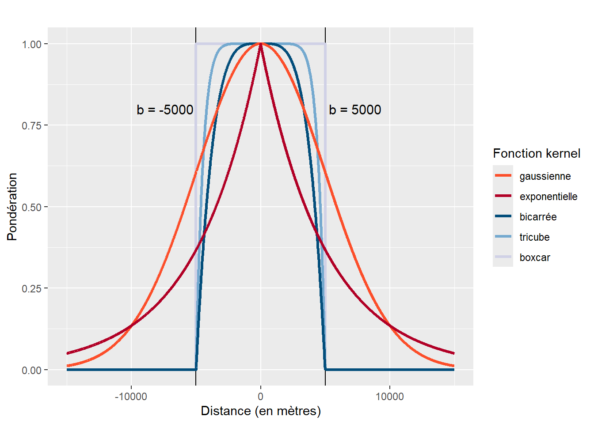
4 Régressions géographiquement pondérées classiques
La régression géographiquement pondérée (geographically weighted regression - GWR, en anglais) a été formalisée au milieu des années 1990 par Chris Brunsdon, Steward Fotheringham et Martin Charlton (1996), puis largement décrite dans un ouvrage de référence (Fotheringham, Brunsdon et Charlton 2003). Dans le cadre de ce chapitre, nous abordons uniquement la GWR classique qui s’applique à une variable dépendante continue (GWR gaussienne).
Objectifs d’apprentissage visés dans ce chapitre
À la fin de ce chapitre, vous devriez être en mesure de :
- Comprendre pourquoi utiliser une GWR.
- Assimiler les principes fondamentaux d’une GWR classique (distribution gaussienne).
- Analyser les résultats produits par une GWR.
- Saisir que la GWR est un outil exploratoire intéressant, comprenant toutefois plusieurs limites et critiques importantes.
- Mettre en pratique une GWR dans R.
Liste des packages utilisés dans ce chapitre
- Pour importer et manipuler des fichiers géographiques :
-
sfpour importer et manipuler des données vectorielles. -
dplyrpour manipuler les données.
-
- Pour construire des cartes et des graphiques :
-
tmappour les cartes. -
ggplot2etggpubrpour construire des graphiques. -
corrplotetGGallypour créer des graphiques de matrices de corrélation.
-
- Pour construire des modèles de régressions :
-
spgwretGWmodelpour construire des GWR gaussienne, logistique et Poisson. -
spdeppour construire des matrices de pondération spatiales et calculer le I de Moran.
-
4.1 Principe de base
4.1.1 Pourquoi recourir à une régression géographiquement pondérée?
Dans le chapitre 2, nous avons vu que les modèles d’économétrie spatiale visent à contrôler la dépendance spatiale d’un modèle de régression classique (MCO), afin d’améliorer l’estimation des coefficients de régression. L’objectif des modèles de régression géographiquement pondérée est différent : ils visent à analyser les variations spatiales de la relation entre la variable dépendante et les variables indépendantes. Autrement dit, les modèles GWR visent à explorer l’instabilité spatiale du modèle MCO afin d’analyser localement la relation entre la variable dépendante et les variables indépendantes. Pour une description détaillée en français de la GWR, consultez Apparicio et al. (2007).
4.1.2 Formulation de la GWR
Contrairement à la régression linéaire classique et aux modèles spatiaux autorégressifs qui produisent une équation pour l’ensemble du tableau de données, la GWR produit une équation pour chaque unité spatiale i et ainsi, des valeurs locales de R2, \(\beta_0\), \(\beta_k\), t de Student, etc. La résolution de cette équation de régression locale est aussi basée sur la méthode des moindres carrés et sur une matrice de pondérations spatiales (\(\mathbf{W(i)}\)) dont les valeurs décroissent en fonction de la distance séparant les entités spatiales i et j. Autrement dit, plus j est proche de i, plus sa pondération est élevée et donc plus son rôle dans la détermination de l’équation de régression locale de i est important.
De la sorte, la GWR est une extension de la régression linéaire multiple classique où \((u_i, v_i)\) représente les coordonnées géographiques du centroïde de l’unité spatiale et où les paramètres \(\beta_0\) et \(\beta_k\) peuvent varier dans l’espace (équation 4.1).
\[ y_i = \beta_0(u_i, v_i)+ \sum_{j=1}^k \beta_j(u_i, v_i)x_{ij}+ \epsilon_i \tag{4.1}\]
avec :
- \((u_i, v_i)\), les coordonnées géographiques de l’unité spatiale i.
- \(y_i\), la variable dépendante pour l’unité spatiale i.
- \(\beta_0(u_i, v_i)\), la constante pour l’unité spatiale i aux coordonnées géographiques \((u_i, v_i)\).
- \(\beta_j(u_i, v_i)\), le coefficient de régression pour la variable \(x_j\) (avec k variables indépendantes) pour l’unité spatiale i aux coordonnées géographiques \((u_i, v_i)\).
- \(x_{ij}\), la valeur de la variable indépendante \(x_j\) pour l’unité spatiale i.
- \(\epsilon_i\), le terme d’erreur pour l’unité spatiale i.
Fotheringham et al. (2003) proposent deux principales fonctions kernel pour définir la matrice de pondérations spatiales \(\mathbf{W(i)}\) dans le modèle GWR : une fonction gaussienne (équation 4.2) et une fonction bicarrée (équation 4.3) où \(d_{ij}\) représente la distance euclidienne entre les points i et j et b, le rayon de zone d’influence autour du point i (bandwidth). Il existe une différence fondamentale entre les deux : la fonction gaussienne accorde un poids non nul à tous les points de l’espace d’étude aussi loin soient-ils, tandis que la fonction bicarrée ne tient pas compte des points distants à plus de b mètres de i, tel qu’illustré à la figure 4.1 avec une valeur fixée à 5000 mètres en guise d’exemple.
\[ w_{ij} = \exp\left(-\frac{1}{2}\left(\frac{d_{ij}}{b}\right)^2\right) \tag{4.2}\]
\[ w_{ij} = \left(1 - \left(\frac{d_{ij}}{b}\right)^2\right)^2 \text{ si } d_{ij}< b \text{, sinon } w_{ij}=0 \tag{4.3}\]
Autres fonctions Kernel pour la GWR
Outre les fonctions Kernel gaussienne et bicarrée, il est aussi possible d’utiliser des fonctions exponentielle (équation 4.4) et tricube (équation 4.5), et Boxcar (équation 4.6) implémentées dans les fonctions bw.gw et gwr.basic du package GWmodel.
\[ w_{ij} = \exp\left(-\frac{d_{ij}}{b}\right) \tag{4.4}\]
\[ w_{ij} = \left(1 - \left(\frac{d_{ij}}{b}\right)^3\right)^3 \text{ si } d_{ij}< b \text{, sinon } w_{ij}=0 \tag{4.5}\]
\[ w_{ij} = 1 \text{ si } d_{ij}< b \text{, sinon } w_{ij}=0 \tag{4.6}\]
Dans le modèle GWR, la valeur de b est soit fixée par la personne utilisatrice, soit optimisée avec la valeur de CV (cross-validation) ou celle de l’AIC. Notez qu’il est possible d’optimiser la taille de la zone d’influence à partir de la distance (euclidienne le plus souvent, mais d’autres types de distances peuvent être utilisées) ou du nombre de plus proches voisins.
4.1.3 Exemple applicatif de la GWR
Pour démontrer l’utilité de la GWR comme outil d’exploration de l’instabilité spatiale d’un modèle classique, nous utilisons le jeu de données sur Lyon (section 1.1.1). Les modèles de régression (global et GWR) sont construits avec comme variable dépendante le dioxyde d’azote (NO2) et cinq variables sociodémographiques comme variables indépendantes (section 1.1.1).
4.1.3.1 Résultats du modèle global
Les résultats de la régression linéaire multiple (modèle global) sont présentés au tableau 4.1. Les variables sociodémographiques (variables indépendantes) introduites dans le modèle expliquent 28,3 % de la variance du dioxyde d’azote (variable dépendante). La constante et tous les coefficients de régression du modèle sont significatifs (p < 0,001). Toutes choses étant égales par ailleurs, le pourcentage d’immigrants est associé positivement avec le dioxyde d’azote (\(\beta\) = 0,283), ce qui traduit une certaine iniquité environnementale pour ce groupe de population. À l’inverse, toutes les autres variables sont associées négativement.
| Variable | Coef. | Erreur type | t | p |
|---|---|---|---|---|
| Constante | 49,433 | 2,995 | 16,502 | 0,000 |
| Pct0_14 | -0,534 | 0,063 | -8,461 | 0,000 |
| Pct_65 | -0,150 | 0,056 | -2,674 | 0,008 |
| Pct_Img | 0,283 | 0,051 | 5,532 | 0,000 |
| Pct_brevet | -0,240 | 0,037 | -6,451 | 0,000 |
| NivVieMed | -0,316 | 0,102 | -3,107 | 0,002 |
| Nombre d'observations = 506. R carré = 0,2832. R carré ajusté = 0,276. |
L’objectif de la construction d’un modèle GWR est d’examiner l’instabilité spatiale de ce modèle, en analysant comment les associations observées dans le modèle global entre les cinq variables sociodémographiques et le dioxyde d’azote varient dans l’espace.
4.1.3.2 Résultats du modèle GWR
Définition de la zone d’influence
Puisque la superficie des 506 IRIS varie considérablement (avec de petits IRIS au centre de l’agglomération et de très grands IRIS en périphérie, figure 1.1), nous préférons optimiser la zone d’influence (\(b\)) avec le nombre de plus proches voisins et non la distance euclidienne avec l’approche cross-validation. Le résultat final de l’optimisation du nombre de plus proches voisins est de 92.
Comparaison des modèle global et GWR
L’analyse de variance entre les résidus des deux modèles démontre que le modèle GWR améliore de façon significative la capacité prédictive du modèle de régression globale (tableau 4.2). Les valeurs de R2 passent d’ailleurs de 0,283 pour le modèle global à 0,784 pour le modèle GWR.
| dl | Somme des carrés | Moyenne des carrés | Valeur F | |
|---|---|---|---|---|
| Résidus du modèle global | 6,00 | 22 346,02 | ||
| Modèle GWR | 101,13 | 15 581,60 | 154,08 | |
| Résidus du modèle GWR | 398,87 | 6 764,42 | 16,96 | 9,09 |
| R carré du modèle global = 0,2832. R carré du modèle GWR = 0,7838. |
Cartographie des valeurs de t
Afin de décrire les variations spatiales des associations entre les variables dépendantes et indépendantes, nous cartographions les valeurs de t pour chacune des cinq variables indépendantes (figure 4.2). Pour ce faire, nous utilisons les seuils de ± 1,96, 2,58 et 3,29, indiquant des seuils de signification à 5 %, 1 % et 0,1 %. La cartographie des valeurs de t illustre clairement les variations spatiales de l’association entre les variables indépendantes et le dioxyde d’azote.
Premièrement, le modèle global avait révélé que toutes les variables indépendantes étaient significativement associées au seuil de 0,1 %, toutes choses étant égales par ailleurs. Or, localement certaines variables ne sont plus significatives au seuil de 5 % (valeurs de t comprises entre -1,96 et 1,96), soit les IRIS en gris à la figure 4.2. Par exemple, le pourcentage d’enfants de moins de 15 ans est associé négativement au dioxyde d’azote uniquement dans la partie sud de l’agglomération.
Deuxièmement, le sens de la relation, c’est-à-dire du coefficient et de sa valeur de t associé, change pour certaines variables indépendantes. Cela est particulièrement le cas de la variable médiane du niveau de vie (milliers d’euros) qui affiche des valeurs positives dans le centre-ville, mais des valeurs négatives en périphérie. Autrement dit, une hausse du niveau de vie des résidents est associée à une réduction du dioxyde d’azote dans les quartiers et municipalités périphériques de l’agglomération, mais à une augmentation dans les quartiers centraux.
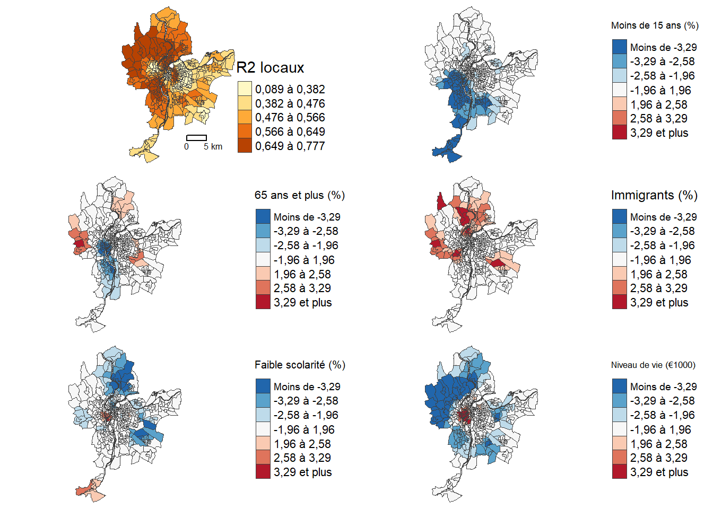
Cartographie du nombre de variables significative et de la variable plus significatives
Pour compléter l’exploration des résultats de la GWR, il est possible de répondre à deux dernières questions avec de nouvelles analyses cartographiques (figure 4.3) :
Quelle est la variable indépendante la plus significative localement?
Comment de variables indépendantes sont localement significatives (au seuil de 5 %)?
Les deux variables les plus significatives localement sont celles relatives au niveau de vie à la population de moins de 15 ans (toutes deux 124 IRIS). Aussi, 159 modèles locaux ne présentent aucune variable significative au seuil retenu.
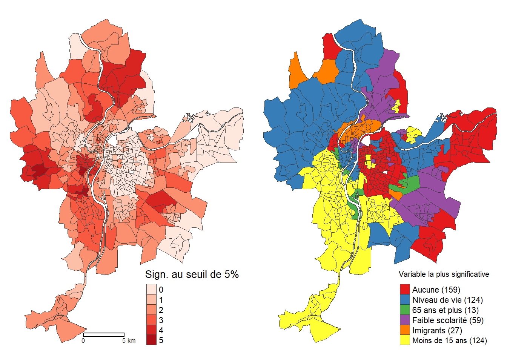
4.2 Mise en œuvre et analyse dans R
Il existe deux principaux packages pour mettre en œuvre des modèles GWR, soit spgwr (Bivand et Yu 2023) et GWmodel (Isabella Gollini et al. 2015; Binbin Lu et al. 2014). La construction d’un modèle GWR comprend les étapes suivantes :
Sélection de la taille de la zone d’influence (bandwidth) optimale.
Réalisation de la GWR avec la taille de la zone d’influence optimale.
Comparaison des modèles MCO et GWR.
Cartographie des résultats du modèle GWR (R2, coefficients, valeurs de t, etc.).
4.2.1 GWR avec le package spgwr
4.2.1.1 Définition de la taille de la zone d’influence
La sélection de la taille de la zone d’influence optimale est réalisée avec la fonction gwr.sel pour laquelle :
le paramètre
gweightpermet de spécifier une fonction kernel gaussienne (gwr.gauss) ou bicarrée (gwr.gauss).le paramètre
adaptpermet de spécifier si vous optimisez le nombre de plus proches voisins (adapt=TRUE) ou la distance (adapt=FALSE).
## Chargement des packages et des données
library(sf)
library(tmap)
library(spgwr)
load("data/Lyon.Rdata")
## Ajout des coordonnées X et Y dans LyonIris
xy <- st_coordinates(st_centroid(LyonIris))
LyonIris$X <- xy[,1]
LyonIris$Y <- xy[,2]
## Optimisation du nombre de voisins avec le CV
bwCVa_voisins <- gwr.sel(NO2 ~ Pct0_14 + Pct_65 + Pct_Img + Pct_brevet + NivVieMed,
data = LyonIris,
method = "cv", # Méthode cv ou AIC
gweight = gwr.bisquare, # gwr.gauss ou gwr.bisquare
adapt = TRUE,
verbose = FALSE,
RMSE = TRUE,
longlat = FALSE,
coords=cbind(LyonIris$X,LyonIris$Y))
## Optimisation du nombre de voisins avec l'AIC
bwAICa_voisins <- gwr.sel(NO2 ~ Pct0_14 + Pct_65 + Pct_Img + Pct_brevet + NivVieMed,
data = LyonIris,
method = "AIC", # Méthode cv ou AIC
gweight = gwr.bisquare, # gwr.gauss ou gwr.bisquare
adapt = TRUE, # adaptatif
verbose = FALSE,
RMSE = TRUE,
longlat = FALSE,
coords=cbind(LyonIris$X,LyonIris$Y))
## Optimisation de la distance avec le CV
bwCV_dist <- gwr.sel(NO2 ~ Pct0_14 + Pct_65 + Pct_Img + Pct_brevet + NivVieMed,
data = LyonIris,
method = "cv", # méthode cv ou AIC
gweight=gwr.Gauss, # gwr.gauss ou gwr.bisquare
adapt=FALSE, # non adaptatif
verbose = FALSE,
RMSE = TRUE,
longlat = FALSE,
coords=cbind(LyonIris$X,LyonIris$Y))
## Optimisation de la distance avec l'AIC
bwAIC_dist <- gwr.sel(NO2 ~ Pct0_14 + Pct_65 + Pct_Img + Pct_brevet + NivVieMed,
data = LyonIris,
method = "AIC", # méthode cv ou AIC
gweight=gwr.Gauss, # gwr.gauss ou gwr.bisquare
adapt=FALSE, # non adaptatif
RMSE = TRUE,
verbose = FALSE,
longlat = FALSE,
coords=cbind(LyonIris$X,LyonIris$Y))
## Affichage des résultats d'optimisation
cat("Sélection de la taille de la zone optimale (bandwidth)",
"\n avec le nombre de plus proches voisins :",
"\n CV =", round(bwCVa_voisins,4), "nombre de voisins =",
round(bwCVa_voisins*nrow(LyonIris)),
"\n AIC =", round(bwAICa_voisins,4), "nombre de voisins =",
round(bwAICa_voisins*nrow(LyonIris)),
"\nSélection de la taille de la zone optimale (bandwidth) avec la distance :",
"\n CV =", round(bwCV_dist, 0), "mètres",
"\n AIC =", round(bwAIC_dist, 0), "mètres")Sélection de la taille de la zone optimale (bandwidth)
avec le nombre de plus proches voisins :
CV = 0.1818 nombre de voisins = 92
AIC = 0.1067 nombre de voisins = 54
Sélection de la taille de la zone optimale (bandwidth) avec la distance :
CV = 1315 mètres
AIC = 1662 mètresLes résultats ci-dessus montrent que le nombre de plus proches voisins pourrait être de 92 selon l’approche cross-validation et de 54 selon la méthode basée sur l’AIC. Si la valeur de b est basée sur la distance, elle serait alors optimale à 1315 et 1662 mètres selon les deux méthodes.
4.2.1.2 Réalisation de la GWR
Avec la fonction gwr, nous estimons un modèle GWR avec un kernel bicarré et un nombre optimisé de plus voisins selon la méthode CV, soit 92.
# Modèle global : régression linéaire multiple
modele_global <- lm(NO2 ~ Pct0_14 + Pct_65 + Pct_Img + Pct_brevet + NivVieMed, data = LyonIris)
# Modèle GWR
modele_gwr <- gwr(NO2 ~ Pct0_14 + Pct_65 + Pct_Img + Pct_brevet + NivVieMed,
data = LyonIris,
adapt= bwCVa_voisins,
gweight = gwr.bisquare,
hatmatrix = TRUE,
se.fit = TRUE,
coords = cbind(LyonIris$X,LyonIris$Y),
longlat = FALSE)Le code ci-dessous permet de renvoyer les statistiques univariées des coefficients des 506 régressions locales, réalisées pour chacune des 506 entités spatiales (IRIS), et les statistiques d’ajustement du modèle du modèle GWR (AIC, R2 quasi-global, etc.).
modele_gwrCall:
gwr(formula = NO2 ~ Pct0_14 + Pct_65 + Pct_Img + Pct_brevet +
NivVieMed, data = LyonIris, coords = cbind(LyonIris$X, LyonIris$Y),
gweight = gwr.bisquare, adapt = bwCVa_voisins, hatmatrix = TRUE,
longlat = FALSE, se.fit = TRUE)
Kernel function: gwr.bisquare
Adaptive quantile: 0.1818192 (about 92 of 506 data points)
Summary of GWR coefficient estimates at data points:
Min. 1st Qu. Median 3rd Qu. Max. Global
X.Intercept. 12.429518 30.249511 38.619342 48.038863 60.098584 49.4330
Pct0_14 -1.094802 -0.360556 -0.215643 -0.047687 0.382801 -0.5335
Pct_65 -0.715331 -0.158253 -0.031353 0.076086 0.464992 -0.1505
Pct_Img -0.331892 -0.049146 0.077177 0.240755 0.670433 0.2829
Pct_brevet -0.655221 -0.221655 -0.084954 0.047835 0.598456 -0.2400
NivVieMed -1.140895 -0.560649 -0.214717 0.193768 1.311228 -0.3162
Number of data points: 506
Effective number of parameters (residual: 2traceS - traceS'S): 107.1278
Effective degrees of freedom (residual: 2traceS - traceS'S): 398.8722
Sigma (residual: 2traceS - traceS'S): 4.118116
Effective number of parameters (model: traceS): 81.53263
Effective degrees of freedom (model: traceS): 424.4674
Sigma (model: traceS): 3.992025
Sigma (ML): 3.656286
AICc (GWR p. 61, eq 2.33; p. 96, eq. 4.21): 2945.674
AIC (GWR p. 96, eq. 4.22): 2829.504
Residual sum of squares: 6764.424
Quasi-global R2: 0.783008 4.2.1.3 Comparaison des modèles MCO et GWR
Le R2 du modèle GWR est bien supérieur à celui du modèle classique MCO (0,783 contre 0,283).
r2_global <- summary(modele_global)$r.squared
rss <- sum((modele_gwr$lm$y - modele_gwr$SDF$pred)^2)
tss <- sum((modele_gwr$lm$y - mean(modele_gwr$SDF$pred))^2)
r2_gwrquasiglobal <- 1 - (rss / tss)
cat("R2 global (LM) = ", round(r2_global, 3),
"\nR2 quasi-global (GWR) : ", round(r2_gwrquasiglobal, 3))R2 global (LM) = 0.283
R2 quasi-global (GWR) : 0.784Fotheringham et al. (2003) proposent plusieurs tests pour comparer les modèles GWR et classique qui sont implémentés dans le package spgwr : fonctions BFC99.gwr.test(modele_gwr), BFC02.gwr.test(modele_gwr), LMZ.F1GWR.test(modele_gwr), LMZ.F2GWR.test(modele_gwr). Si les valeurs de p de ces tests sont inférieures à 0,05, alors le modèle GWR améliore de façon significative la capacité prédictive du modèle de régression globale, ce que confirment les résultats ci-dessous.
anova(modele_gwr)Analysis of Variance Table
Df Sum Sq Mean Sq F value
OLS Residuals 6.00 22346.0
GWR Improvement 101.13 15581.6 154.078
GWR Residuals 398.87 6764.4 16.959 9.0854BFC99.gwr.test(modele_gwr)
Brunsdon, Fotheringham & Charlton (1999) ANOVA
data: modele_gwr
F = 9.0854, df1 = 350.93, df2 = 430.81, p-value < 2.2e-16
alternative hypothesis: greater
sample estimates:
SS GWR improvement SS GWR residuals
15581.596 6764.424 BFC02.gwr.test(modele_gwr)
Brunsdon, Fotheringham & Charlton (2002, pp. 91-2) ANOVA
data: modele_gwr
F = 3.3035, df1 = 500.00, df2 = 398.87, p-value < 2.2e-16
alternative hypothesis: greater
sample estimates:
SS OLS residuals SS GWR residuals
22346.021 6764.424 LMZ.F1GWR.test(modele_gwr)
Leung et al. (2000) F(1) test
data: modele_gwr
F = 0.37946, df1 = 430.81, df2 = 500.00, p-value < 2.2e-16
alternative hypothesis: less
sample estimates:
SS OLS residuals SS GWR residuals
22346.021 6764.424 LMZ.F2GWR.test(modele_gwr)
Leung et al. (2000) F(2) test
data: modele_gwr
F = 3.4476, df1 = 142.92, df2 = 500.00, p-value < 2.2e-16
alternative hypothesis: greater
sample estimates:
SS OLS residuals SS GWR improvement
22346.02 15581.60 Un autre test (LMZ.F3GWR.test) permet de répondre à la question suivante : est-ce que les coefficients de régression du modèle GWR varient spatialement de façon significative? Les résultats ci-dessous démontrent que c’est le cas pour toutes les variables indépendantes et la constante (p < 0,001).
LMZ.F3GWR.test(modele_gwr)
Leung et al. (2000) F(3) test
F statistic Numerator d.f. Denominator d.f. Pr(>)
(Intercept) 2.2771 134.3880 430.81 1.629e-10 ***
Pct0_14 2.7767 141.7244 430.81 5.636e-16 ***
Pct_65 2.0918 169.0472 430.81 8.399e-10 ***
Pct_Img 1.9486 106.4400 430.81 1.550e-06 ***
Pct_brevet 2.4445 121.2830 430.81 1.629e-11 ***
NivVieMed 3.6926 138.8118 430.81 < 2.2e-16 ***
---
Signif. codes: 0 '***' 0.001 '**' 0.01 '*' 0.05 '.' 0.1 ' ' 1Pour comparer la dépendance spatiale des deux modèles (MCO versus GWR), nous calculons le I de Moran sur leurs résidus avec une matrice de contiguïté standardisée selon le partage d’un segment (Rook). Avec une valeur du I de Moran de 0,587 (p < 0,001), les résidus du modèle global (MCO) sont fortement autocorrélés spatialement, traduisant ainsi un problème de dépendance spatiale du modèle. Bien qu’elle soit toujours significative, l’autocorrélation spatiale des résidus du modèle GWR est bien plus faible (0,275, p < 0,001). La cartographie des résidus des deux modèles à la figure 4.4 corrobore ces résultats.
library(spdep)
## Résidus des modèles global (MCO) et GWR
LyonIris$MCO.Residus <- modele_global$residuals
LyonIris$GWR.Residus <- modele_gwr$SDF$pred - modele_gwr$lm$y
## Matrice de contiguïté
rook_nb <- poly2nb(LyonIris, queen=TRUE)
rook_w <- nb2listw(rook_nb, zero.policy=TRUE, style = "W")
# I de Moran sur les résidus du modèle global (MCO)
moran.test(LyonIris$MCO.Residus, rook_w, randomisation = FALSE)
Moran I test under normality
data: LyonIris$MCO.Residus
weights: rook_w
Moran I statistic standard deviate = 21.275, p-value < 2.2e-16
alternative hypothesis: greater
sample estimates:
Moran I statistic Expectation Variance
0.5775768402 -0.0019801980 0.0007420591 # I de Moran sur les résidus du modèle GWR (MCO)
moran.test(LyonIris$GWR.Residus, rook_w, randomisation = FALSE)
Moran I test under normality
data: LyonIris$GWR.Residus
weights: rook_w
Moran I statistic standard deviate = 10.171, p-value < 2.2e-16
alternative hypothesis: greater
sample estimates:
Moran I statistic Expectation Variance
0.2750946577 -0.0019801980 0.0007420591 ## Cartographie des résidus du modèle MCO
tmap_mode("plot")
carte1 <- tm_shape(LyonIris)+
tm_borders(col="gray25", lwd=.5)+
tm_fill(col="MCO.Residus", n = 6, style = "pretty",
legend.format = list(text.separator = "à",
decimal.mark = ","),
midpoint = 0,
palette = "-RdBu",
title = "MCO") +
tm_layout(frame=FALSE)
## Cartographie des résidus du modèle GWR
carte2 <- tm_shape(LyonIris)+
tm_borders(col="gray25", lwd=.5)+
tm_fill(col="GWR.Residus", n = 6, style = "pretty",
legend.format = list(text.separator = "à",
decimal.mark = ","),
midpoint = 0,
palette = "-RdBu",
title = "GWR") +
tm_layout(frame=FALSE) +
tm_scale_bar(breaks = c(0,5))
tmap_arrange(carte1, carte2, nrow = 1)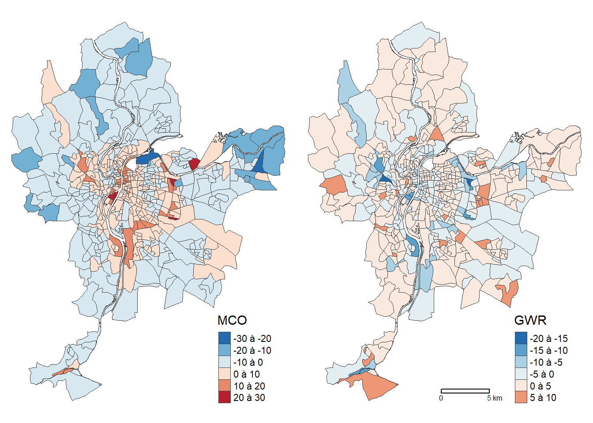
4.2.1.4 Cartographie des résultats du modèle GWR
Dans un premier temps, nous ajoutons les valeurs locales des R2, des coefficients de régression et des valeurs de t dans la couche sf. Notez que les résultats locaux de la GWR sont stockés dans l’objet modele_gwr$SDF.
## Récupération du R carré local
LyonIris$GWR.R2 <- modele_gwr$SDF$localR2
## Récupération des coefficients de régression et calcul des valeurs de t locales
names(modele_gwr$SDF) [1] "sum.w" "(Intercept)" "Pct0_14"
[4] "Pct_65" "Pct_Img" "Pct_brevet"
[7] "NivVieMed" "(Intercept)_se" "Pct0_14_se"
[10] "Pct_65_se" "Pct_Img_se" "Pct_brevet_se"
[13] "NivVieMed_se" "gwr.e" "pred"
[16] "pred.se" "localR2" "(Intercept)_se_EDF"
[19] "Pct0_14_se_EDF" "Pct_65_se_EDF" "Pct_Img_se_EDF"
[22] "Pct_brevet_se_EDF" "NivVieMed_se_EDF" "pred.se" vars_indep <- c("Pct0_14", "Pct_65", "Pct_Img", "Pct_brevet", "NivVieMed")
for(e in vars_indep){
# Nom des nouvelles variables
var_coef <- paste0("GWR.", "B_", e)
var_t <- paste0("GWR.", "T_", e)
# Récupération des coefficients pour les variables indépendantes
LyonIris[[var_coef]] <- modele_gwr$SDF[[e]]
# Calcul des valeurs de t pour les variables indépendantes
LyonIris[[var_t]] <- modele_gwr$SDF[[e]] / modele_gwr$SDF[[paste0(e, "_se")]]
}4.2.1.4.1 Cartographie et analyse des R2 locaux
Les deux lignes de code ci-dessous permettent d’obtenir un résumé sommaire des statistiques descriptives (minimum, quartiles 1 à 3, moyenne et maximum) des valeurs locales de R2, mais aussi de constater qu’elles varient de 0,19 à 0,74 pour 95 % des 506 observations (IRIS).
summary(LyonIris$GWR.R2) Min. 1st Qu. Median Mean 3rd Qu. Max.
0.0888 0.4205 0.5281 0.5081 0.6322 0.7774 2.5% 97.5%
0.1876 0.7390 Le code ci-dessous permet ensuite de cartographier les R2 locaux de la GWR (figure 4.5).
library(tmap)
# Paramètres pour la légende
legende_parametres <- list(text.separator = "à",
decimal.mark = ",")
tm_shape(LyonIris)+
tm_borders(col="gray25", lwd=.5)+
tm_fill(col="GWR.R2",
palette="YlOrBr",
n=5, style="quantile",
legend.format = legende_parametres,
title = "R2 locaux")+
tm_layout(frame=FALSE)+
tm_scale_bar(breaks=c(0,5))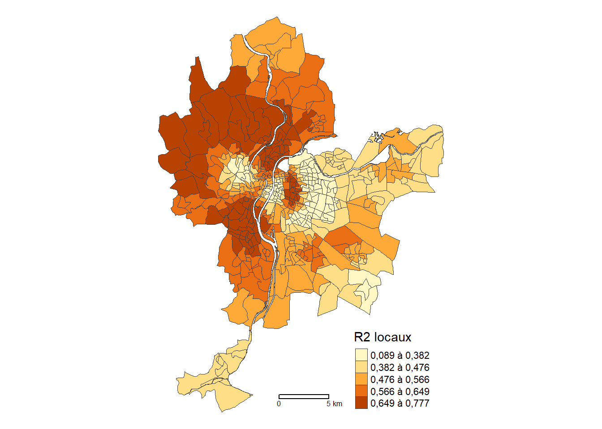
4.2.1.4.2 Cartographie des coefficients de régression locaux
Le code ci-dessous permet ensuite de cartographier les coefficients locaux de la GWR (figure 4.6).
# Paramètres pour la légende
legende_parametres <- list(text.separator = "à",
decimal.mark = ",",
big.mark = " ")
carte1 <- tm_shape(LyonIris)+ tm_borders(col="gray25", lwd=.5)+
tm_fill(col="GWR.B_Pct0_14", palette="YlOrBr", n=4, style="pretty",
legend.format = legende_parametres,
title = "Moins de 15 ans (%)")+
tm_layout(frame=FALSE, legend.outside = TRUE)
carte2 <- tm_shape(LyonIris)+ tm_borders(col="gray25", lwd=.5)+
tm_fill(col="GWR.B_Pct_65", palette="YlOrBr", n=4, style="pretty",
legend.format = legende_parametres,
title = "65 ans et plus (%)")+
tm_layout(frame=FALSE, legend.outside = TRUE)
carte3 <- tm_shape(LyonIris)+ tm_borders(col="gray25", lwd=.5)+
tm_fill(col="GWR.B_Pct_Img", palette="YlOrBr", n=4, style="pretty",
legend.format = legende_parametres,
title = "Immigrants (%)")+
tm_layout(frame=FALSE, legend.outside = TRUE)
carte4 <- tm_shape(LyonIris)+ tm_borders(col="gray25", lwd=.5)+
tm_fill(col="GWR.B_Pct_brevet", palette="YlOrBr", n=4, style="pretty",
legend.format = legende_parametres,
title = "Faible scolarité (%)")+
tm_layout(frame=FALSE, legend.outside = TRUE)
carte5 <- tm_shape(LyonIris)+ tm_borders(col="gray25", lwd=.5,)+
tm_fill(col="GWR.B_NivVieMed", palette="YlOrBr", n=4, style="pretty",
legend.format = legende_parametres,
title = "Niveau de vie (€1000)")+
tm_layout(frame=FALSE, legend.outside = TRUE)+
tm_scale_bar(breaks=c(0,5))
tmap_arrange(carte1, carte2, carte3, carte4, carte5, ncol = 2, nrow=3)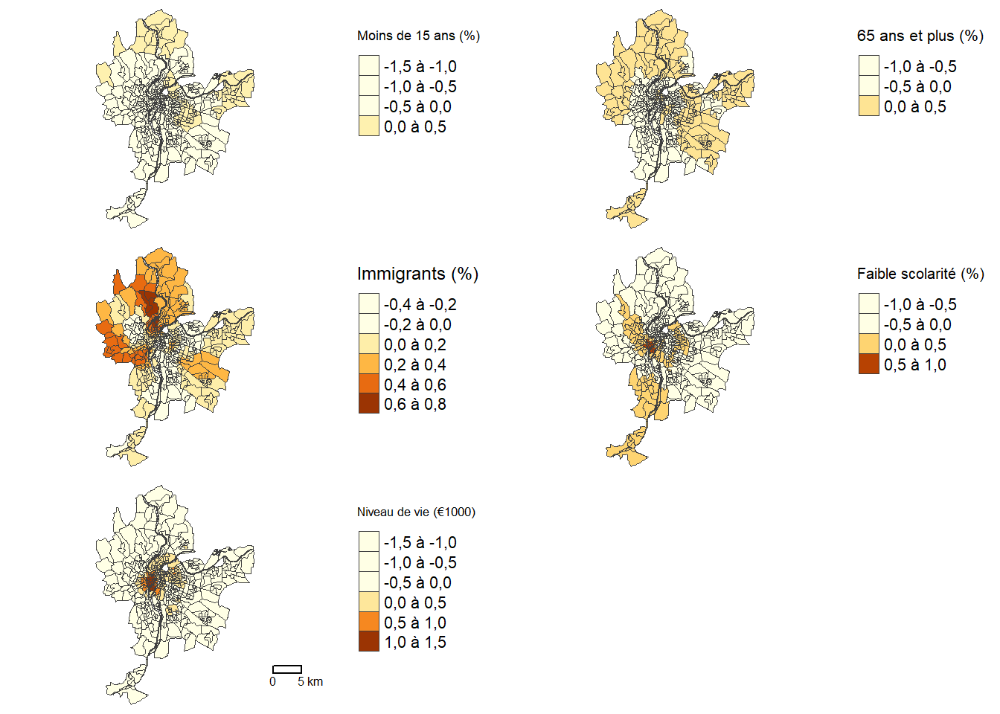
4.2.1.4.3 Cartographie des valeurs de t locales
Pour cartographier les valeurs de t, nous utilisons les seuils de ± 1,96, 2,58 et 3,29, indiquant des seuils de signification à 5 %, 1 % et 0,1 % (figure 4.7).
# Paramètres pour la légende
legende_parametres <- list(text.separator = "à",
text.less.than = "Moins de",
text.or.more = "et plus",
decimal.mark = ",",
big.mark = " ")
classes_intervalles = c(-Inf, -3.29, -2.58, -1.96, 1.96, 2.58, 3.29, Inf)
carte1 <- tm_shape(LyonIris)+ tm_borders(col="gray25", lwd=.5)+
tm_fill(col="GWR.T_Pct0_14", palette="-RdBu",
midpoint = NA,
breaks = classes_intervalles,
legend.format = legende_parametres,
title = "Moins de 15 ans (%)")+
tm_layout(frame=FALSE, legend.outside = TRUE)
carte2 <- tm_shape(LyonIris)+ tm_borders(col="gray25", lwd=.5)+
tm_fill(col="GWR.T_Pct_65", palette="-RdBu",
midpoint = NA,
breaks = classes_intervalles,
legend.format = legende_parametres,
title = "65 ans et plus (%)")+
tm_layout(frame=FALSE, legend.outside = TRUE)
carte3 <- tm_shape(LyonIris)+ tm_borders(col="gray25", lwd=.5)+
tm_fill(col="GWR.T_Pct_Img", palette="-RdBu",
midpoint = NA,
breaks = classes_intervalles,
legend.format = legende_parametres,
title = "Immigrants (%)")+
tm_layout(frame=FALSE, legend.outside = TRUE)
carte4 <- tm_shape(LyonIris)+ tm_borders(col="gray25", lwd=.5)+
tm_fill(col="GWR.T_Pct_brevet", palette="-RdBu",
midpoint = NA,
breaks = classes_intervalles,
legend.format = legende_parametres,
title = "Faible scolarité (%)")+
tm_layout(frame=FALSE, legend.outside = TRUE)
carte5 <- tm_shape(LyonIris)+ tm_borders(col="gray25", lwd=.5)+
tm_fill(col="GWR.T_NivVieMed", palette="-RdBu",
midpoint = NA,
breaks = classes_intervalles,
legend.format = legende_parametres,
title = "Niveau de vie (€1000)")+
tm_layout(frame=FALSE, legend.outside = TRUE)+
tm_scale_bar(breaks=c(0,5))
tmap_arrange(carte1, carte2, carte3, carte4, carte5, ncol = 2, nrow=3)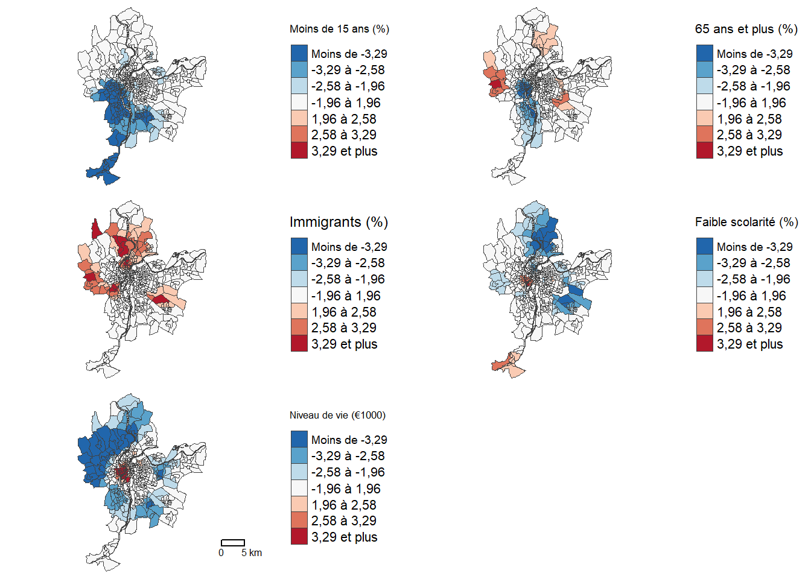
4.2.1.4.4 Cartographie du nombre de variables significatives
Nous pouvons aussi cartographier le nombre de variables localement significatives aux seuils de 5 % et 1 %.
## Identifier la variable la plus significative avec les valeurs de t
Vars_t <- paste0("GWR.T_", c("Pct0_14", "Pct_65", "Pct_Img", "Pct_brevet", "NivVieMed"))
lyon_df <- st_drop_geometry(LyonIris)
lyon_df <- abs(lyon_df[,Vars_t])
plus_sign <- Vars_t[apply(lyon_df[Vars_t],1,which.max)]
plus_sign <- substr(plus_sign, 7, nchar(plus_sign))
max_abs_tvalue <- apply(lyon_df[Vars_t], 1, max)
plus_sign <- ifelse(max_abs_tvalue<1.96, "Aucune", plus_sign)
## Nombre de variables significatives au seuil de 5%, soit abs(t)= 1,96)
LyonIris$nb_signif_1.96 <- as.factor(rowSums(lyon_df > 1.96))
LyonIris$nb_signif_2.58 <- as.factor(rowSums(lyon_df > 2.58))
LyonIris$plus_sign <- as.factor(plus_sign)
## Cartographie
carte1 <- tm_shape(LyonIris)+ tm_borders(col="gray25", lwd=.5)+
tm_fill(col="nb_signif_1.96", palette="Reds",
title = "Sign. au seuil de 5%")+
tm_layout(frame=FALSE)+ tm_scale_bar(breaks=c(0,5))
carte2 <- tm_shape(LyonIris)+ tm_borders(col="gray25", lwd=.5)+
tm_fill(col="nb_signif_2.58", palette="Reds",
title = "Sign. au seuil de 1%")+
tm_layout(frame=FALSE)
tmap_arrange(carte1, carte2, ncol=2, nrow=1)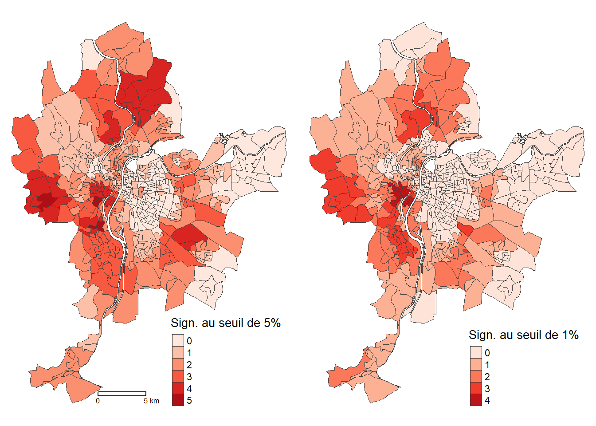
4.2.1.4.5 Cartographie de la variable la plus significative avec la valeur de t
Finalement, le code ci-dessous permet de repérer la variable la plus significative au seuil de 5 %, c’est-à-dire avec la plus forte valeur absolue pour la valeur de t.
tm_shape(LyonIris)+ tm_borders(col="gray25", lwd=.5)+
tm_fill(col="plus_sign", palette="Set1",
title = "Variable la plus significative")+
tm_layout(frame=FALSE)+ tm_scale_bar(breaks=c(0,5))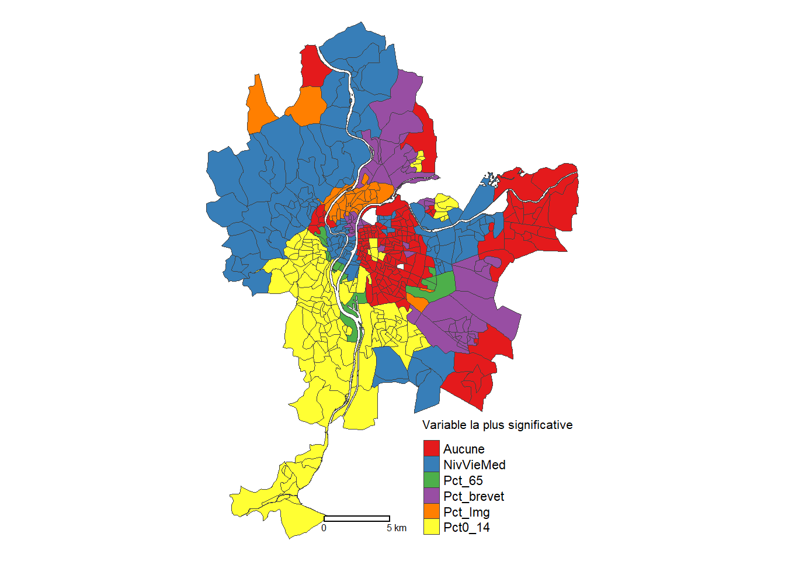
4.2.2 GWR avec le package GWmodel
La construction d’une régression GWR est certainement plus simple (moins verbeuse) avec les fonctions bw.gwr et gwr.basic du package GWmodel.
4.2.2.1 Définition de la taille de la zone d’influence
La fonction bw.gwr permet de trouver la valeur de la zone d’influence (\(b\)).
library(GWmodel)
load("data/Lyon.Rdata")
# Construction de la matrice de distance
xy <- st_coordinates(st_centroid(LyonIris))
matrice_distances <- gw.dist(dp.locat=xy, p = 2, longlat = FALSE)
## Optimisation du nombre de voisins avec le CV
bwCV_voisins <- bw.gwr(NO2 ~ Pct0_14+Pct_65+Pct_Img+Pct_brevet+NivVieMed,
data = LyonIris,
dMat = matrice_distances,
approach="CV",
kernel="bisquare",
adaptive=TRUE,
longlat = FALSE)Adaptive bandwidth: 320 CV score: 17072.1
Adaptive bandwidth: 206 CV score: 14142.57
Adaptive bandwidth: 134 CV score: 12329.97
Adaptive bandwidth: 91 CV score: 11919.32
Adaptive bandwidth: 63 CV score: 12156.26
Adaptive bandwidth: 107 CV score: 11981.63
Adaptive bandwidth: 79 CV score: 12001.41
Adaptive bandwidth: 96 CV score: 11900.81
Adaptive bandwidth: 101 CV score: 11912.07
Adaptive bandwidth: 94 CV score: 11919.6
Adaptive bandwidth: 98 CV score: 11911.68
Adaptive bandwidth: 95 CV score: 11911.87
Adaptive bandwidth: 97 CV score: 11899.93
Adaptive bandwidth: 97 CV score: 11899.93 ## Optimisation du nombre de voisins avec l'AIC
bwAIC_voisins <- bw.gwr(NO2 ~ Pct0_14+Pct_65+Pct_Img+Pct_brevet+NivVieMed,
data = LyonIris,
dMat = matrice_distances,
approach="AIC",
kernel="bisquare",
adaptive=TRUE,
longlat = FALSE)Adaptive bandwidth (number of nearest neighbours): 320 AICc value: 3181.763
Adaptive bandwidth (number of nearest neighbours): 206 AICc value: 3072.458
Adaptive bandwidth (number of nearest neighbours): 134 AICc value: 2989.605
Adaptive bandwidth (number of nearest neighbours): 91 AICc value: 2943.187
Adaptive bandwidth (number of nearest neighbours): 63 AICc value: 2925.002
Adaptive bandwidth (number of nearest neighbours): 47 AICc value: 2927.612
Adaptive bandwidth (number of nearest neighbours): 74 AICc value: 2929.903
Adaptive bandwidth (number of nearest neighbours): 57 AICc value: 2922.621
Adaptive bandwidth (number of nearest neighbours): 52 AICc value: 2922.879
Adaptive bandwidth (number of nearest neighbours): 58 AICc value: 2923.89
Adaptive bandwidth (number of nearest neighbours): 54 AICc value: 2922.612
Adaptive bandwidth (number of nearest neighbours): 54 AICc value: 2922.612 ## Optimisation de la distance avec le CV
bwCV_dist <- bw.gwr(NO2 ~ Pct0_14+Pct_65+Pct_Img+Pct_brevet+NivVieMed,
data = LyonIris,
dMat = matrice_distances,
approach="CV",
kernel="gaussian",
adaptive=FALSE,
longlat = FALSE)Fixed bandwidth: 22632.98 CV score: 23240.62
Fixed bandwidth: 13990.75 CV score: 22942.89
Fixed bandwidth: 8649.556 CV score: 21987.02
Fixed bandwidth: 5348.517 CV score: 19330.61
Fixed bandwidth: 3308.362 CV score: 15656.55
Fixed bandwidth: 2047.478 CV score: 13534
Fixed bandwidth: 1268.208 CV score: 12883.62
Fixed bandwidth: 786.5929 CV score: 69868.32
Fixed bandwidth: 1565.863 CV score: 13058.8
Fixed bandwidth: 1084.247 CV score: 13320.38
Fixed bandwidth: 1381.902 CV score: 12891.23
Fixed bandwidth: 1197.941 CV score: 12968.27
Fixed bandwidth: 1311.635 CV score: 12869.97
Fixed bandwidth: 1338.475 CV score: 12872.81
Fixed bandwidth: 1295.047 CV score: 12872.27
Fixed bandwidth: 1321.887 CV score: 12870.16
Fixed bandwidth: 1305.299 CV score: 12870.46
Fixed bandwidth: 1315.551 CV score: 12869.91
Fixed bandwidth: 1317.971 CV score: 12869.95
Fixed bandwidth: 1314.055 CV score: 12869.91
Fixed bandwidth: 1316.475 CV score: 12869.92
Fixed bandwidth: 1314.98 CV score: 12869.9
Fixed bandwidth: 1314.627 CV score: 12869.91
Fixed bandwidth: 1315.198 CV score: 12869.9 ## Optimisation de la distance avec l'AIC
bwAIC_dist <- bw.gwr(NO2 ~ Pct0_14+Pct_65+Pct_Img+Pct_brevet+NivVieMed,
data = LyonIris,
dMat = matrice_distances,
approach="AIC",
kernel="gaussian",
adaptive=FALSE,
longlat = FALSE)Fixed bandwidth: 22632.98 AICc value: 3362.597
Fixed bandwidth: 13990.75 AICc value: 3354.75
Fixed bandwidth: 8649.556 AICc value: 3328.284
Fixed bandwidth: 5348.517 AICc value: 3241.508
Fixed bandwidth: 3308.362 AICc value: 3114.667
Fixed bandwidth: 2047.478 AICc value: 3043.093
Fixed bandwidth: 1268.208 AICc value: 3050.841
Fixed bandwidth: 2529.093 AICc value: 3065.054
Fixed bandwidth: 1749.823 AICc value: 3036.6
Fixed bandwidth: 1565.863 AICc value: 3036.749
Fixed bandwidth: 1863.517 AICc value: 3038.25
Fixed bandwidth: 1679.556 AICc value: 3036.195
Fixed bandwidth: 1636.129 AICc value: 3036.214
Fixed bandwidth: 1706.396 AICc value: 3036.289
Fixed bandwidth: 1662.969 AICc value: 3036.176
Fixed bandwidth: 1652.717 AICc value: 3036.181
Fixed bandwidth: 1669.305 AICc value: 3036.18
Fixed bandwidth: 1659.053 AICc value: 3036.177
Fixed bandwidth: 1665.389 AICc value: 3036.177
Fixed bandwidth: 1661.473 AICc value: 3036.176
Fixed bandwidth: 1660.549 AICc value: 3036.176 ## Affichage des résultats d'optimisation
cat("Sélection de la taille de la zone optimale (bandwidth)",
"\n avec le nombre de plus proches voisins :",
"\n CV =", round(bwCV_voisins, 4), "nombre de voisins =", round(bwCV_voisins*nrow(LyonIris)),
"\n AIC =", round(bwAIC_voisins, 4), "nombre de voisins =", round(bwAIC_voisins*nrow(LyonIris)),
"\nSélection de la taille de la zone optimale (bandwidth) avec la distance :",
"\n CV =", round(bwCV_dist, 0), "mètres",
"\n AIC =", round(bwAIC_dist, 0), "mètres")Sélection de la taille de la zone optimale (bandwidth)
avec le nombre de plus proches voisins :
CV = 97 nombre de voisins = 49082
AIC = 54 nombre de voisins = 27324
Sélection de la taille de la zone optimale (bandwidth) avec la distance :
CV = 1315 mètres
AIC = 1661 mètres4.2.2.2 Réalisation de la GWR
Comparativement à la fonction gwr du package spgwr, gwr.basic du package GWmodel offre l’avantage de fournir l’ensemble des résultats :
Ceux de la régression linéaire multiple (modèle global).
Un sommaire statistique des coefficients de régression de la GWR.
Les statistiques de la qualité d’ajustement du modèle (AIC, AICc, R2, R2 ajusté).
Les tests pour comparer les modèles global et GWR (tests F1, F2).
Le test F3 pour vérifier si les coefficients de régression varient ou non spatialement de façon significative.
# Calcul de la GWR
modele_gwr <- gwr.basic(NO2 ~ Pct0_14+Pct_65+Pct_Img+Pct_brevet+NivVieMed,
data = LyonIris,
dMat = matrice_distances, # Matrice de distances
bw = bwCV_voisins, # Zone d'influence
kernel = "bisquare", # Gaussien ou bicarrée
adaptive=TRUE, # Nombre de voisins (TRUE) ou distance (FALSE)
F123.test = TRUE, # Tests F123
longlat = FALSE)
modele_gwr ***********************************************************************
* Package GWmodel *
***********************************************************************
Program starts at: 2025-02-25 20:15:13.817828
Call:
gwr.basic(formula = NO2 ~ Pct0_14 + Pct_65 + Pct_Img + Pct_brevet +
NivVieMed, data = LyonIris, bw = bwCV_voisins, kernel = "bisquare",
adaptive = TRUE, longlat = FALSE, dMat = matrice_distances,
F123.test = TRUE)
Dependent (y) variable: NO2
Independent variables: Pct0_14 Pct_65 Pct_Img Pct_brevet NivVieMed
Number of data points: 506
***********************************************************************
* Results of Global Regression *
***********************************************************************
Call:
lm(formula = formula, data = data)
Residuals:
Min 1Q Median 3Q Max
-27.733 -4.457 -0.499 3.507 29.160
Coefficients:
Estimate Std. Error t value Pr(>|t|)
(Intercept) 49.43296 2.99550 16.502 < 2e-16 ***
Pct0_14 -0.53352 0.06305 -8.461 2.94e-16 ***
Pct_65 -0.15047 0.05627 -2.674 0.00774 **
Pct_Img 0.28287 0.05113 5.532 5.12e-08 ***
Pct_brevet -0.24004 0.03721 -6.451 2.63e-10 ***
NivVieMed -0.31625 0.10180 -3.107 0.00200 **
---Significance stars
Signif. codes: 0 '***' 0.001 '**' 0.01 '*' 0.05 '.' 0.1 ' ' 1
Residual standard error: 6.685 on 500 degrees of freedom
Multiple R-squared: 0.2832
Adjusted R-squared: 0.276
F-statistic: 39.5 on 5 and 500 DF, p-value: < 2.2e-16
***Extra Diagnostic information
Residual sum of squares: 22346.02
Sigma(hat): 6.658629
AIC: 3366.626
AICc: 3366.851
BIC: 2933.798
***********************************************************************
* Results of Geographically Weighted Regression *
***********************************************************************
*********************Model calibration information*********************
Kernel function: bisquare
Adaptive bandwidth: 97 (number of nearest neighbours)
Regression points: the same locations as observations are used.
Distance metric: A distance matrix is specified for this model calibration.
****************Summary of GWR coefficient estimates:******************
Min. 1st Qu. Median 3rd Qu. Max.
Intercept 13.249694 30.566393 38.903053 48.035033 59.6124
Pct0_14 -1.094930 -0.371546 -0.224906 -0.053956 0.3386
Pct_65 -0.711775 -0.157939 -0.033630 0.073991 0.4514
Pct_Img -0.319353 -0.042105 0.078841 0.243274 0.6657
Pct_brevet -0.624419 -0.224105 -0.092008 0.041021 0.5844
NivVieMed -1.108017 -0.555822 -0.213561 0.202347 1.2844
************************Diagnostic information*************************
Number of data points: 506
Effective number of parameters (2trace(S) - trace(S'S)): 103.4065
Effective degrees of freedom (n-2trace(S) + trace(S'S)): 402.5935
AICc (GWR book, Fotheringham, et al. 2002, p. 61, eq 2.33): 2949.788
AIC (GWR book, Fotheringham, et al. 2002,GWR p. 96, eq. 4.22): 2839.039
BIC (GWR book, Fotheringham, et al. 2002,GWR p. 61, eq. 2.34): 2743.804
Residual sum of squares: 6933.276
R-square value: 0.7775915
Adjusted R-square value: 0.7203234
******************F test results of GWR calibration********************
---F1 test (Leung et al. 2000)
F1 statistic Numerator DF Denominator DF Pr(>)
0.38534 Inf 500 < 2.2e-16 ***
---F2 test (Leung et al. 2000)
F2 statistic Numerator DF Denominator DF Pr(>)
3.5405 -31.0892 500 NaN
---F3 test (Leung et al. 2000)
F3 statistic Numerator DF Denominator DF Pr(>)
Intercept 2.3480 133.2095 Inf < 2.2e-16 ***
Pct0_14 2.8529 141.2525 Inf < 2.2e-16 ***
Pct_65 2.1479 168.6132 Inf 3.399e-16 ***
Pct_Img 1.9938 105.6136 Inf 5.756e-09 ***
Pct_brevet 2.4930 120.8152 Inf < 2.2e-16 ***
NivVieMed 3.8747 138.4279 Inf < 2.2e-16 ***
---F4 test (GWR book p92)
F4 statistic Numerator DF Denominator DF Pr(>)
0.31027 402.59351 500 < 2.2e-16 ***
---Significance stars
Signif. codes: 0 '***' 0.001 '**' 0.01 '*' 0.05 '.' 0.1 ' ' 1
***********************************************************************
Program stops at: 2025-02-25 20:15:26.886427 4.2.2.3 Cartographie des résultats du modèle GWR
Une fois le modèle obtenu, nous disposons de l’ensemble des résultats locaux (coefficients, valeur prédite, résidus, valeurs de t et R2) dans l’objet modele_gwr$SDF qui sera une couche sf comme le jeu de données initial. Il est alors aisée de reproduire les cartes présentées à la section 4.2.1.4. En guise d’exemple, dans le code ci-dessous, nous cartographions les valeurs locaux du R2 et uniquement celles de t pour la variable relative au médiane du niveau de vie (figure 4.10).
gwr_resultats <- modele_gwr$SDF
names(gwr_resultats) [1] "Intercept" "Pct0_14" "Pct_65" "Pct_Img"
[5] "Pct_brevet" "NivVieMed" "y" "yhat"
[9] "residual" "CV_Score" "Stud_residual" "Intercept_SE"
[13] "Pct0_14_SE" "Pct_65_SE" "Pct_Img_SE" "Pct_brevet_SE"
[17] "NivVieMed_SE" "Intercept_TV" "Pct0_14_TV" "Pct_65_TV"
[21] "Pct_Img_TV" "Pct_brevet_TV" "NivVieMed_TV" "Local_R2"
[25] "geometry" legende_parametres <- list(text.separator = "à",
text.less.than = "Moins de",
text.or.more = "et plus",
decimal.mark = ",",
big.mark = " ")
classes_intervalles = c(-Inf, -3.29, -2.58, -1.96, 1.96, 2.58, 3.29, Inf)
# Cartographie du R2
carte1 <- tm_shape(gwr_resultats)+
tm_borders(col="gray25", lwd=.5)+
tm_fill(col="Local_R2",
palette="YlOrBr",
n=5,
style="quantile",
legend.format = legende_parametres,
title = "R2 locaux")+
tm_layout(frame=FALSE)+
tm_scale_bar(breaks=c(0,5))
# Cartographie d'une valeur de t
carte2 <- tm_shape(gwr_resultats)+
tm_borders(col="gray25", lwd=.5)+
tm_fill(col="NivVieMed_TV",
palette="-RdBu",
midpoint = NA,
breaks = classes_intervalles,
legend.format = legende_parametres,
title = "Niveau de vie (€1000)")+
tm_layout(frame=FALSE)
tmap_arrange(carte1, carte2)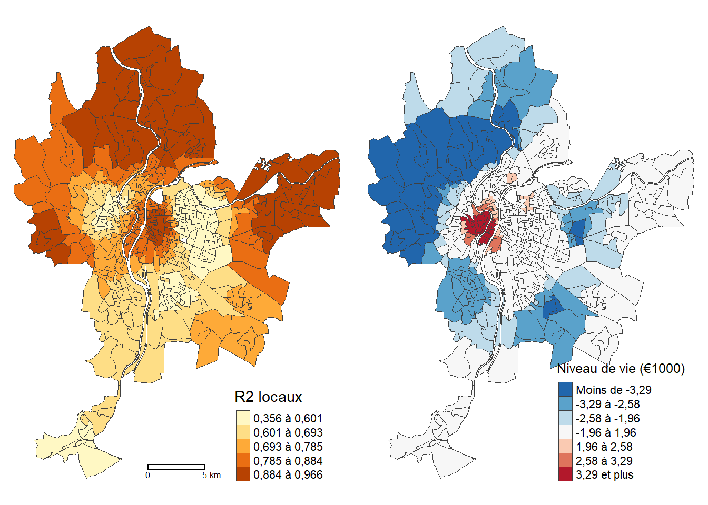
GWmodel
4.3 GWR classiques pour d’autres distributions
Modèles GWR avec d’autres distributions
Dans ce chapitre, nous avons décrit la GWR classique avec une distribution gaussienne qui est une extension de la régression linéaire multiple. Pour construire ce type de GWR classique, nous avons utilisé les fonctions des packages spgwr (gwr.sel et gwr) et GWmodel (bw.gwr et gwr.basic). De la même manière, il est possible des construire des modèles GWR qui sont des extensions des modèles linéaires généralisés (GLM), notamment pour des variables dépendantes qualitatives (modèle logistique binomial), de comptage (Poisson, quasi-poisson), continues (gaussien, inverse gaussienne, Gamma). Pour ce faire, il faut utiliser les fonctions bw.ggwr et ggwr du package spgwr et spécifier le type de distribution avec l’argument family dont la valeur par défaut est gaussian(). Cet argument permet de spécifier la famille de distribution et la fonction de lien en utilisant les familles de distribution disponibles dans la fonction de glm (Generalized Linear Models pour régressions linéaires généralisées) :
binomial(link = "logit")gaussian(link = "identity")Gamma(link = "inverse")inverse.gaussian(link = "1/mu^2")poisson(link = "log")quasi(link = "identity", variance = "constant")quasibinomial(link = "logit")quasipoisson(link = "log")
Avec le package GWmodel, vous pourrez utilisez les fonctions bw.ggwr et gwss qui permettent de réaliser des régressions linéaires pondérées avec des distributions de Poisson et binomiale (avec l’argument family = "poisson" et family = "binomial").
4.4 Limites et critiques des GWR
Bien que la GWR classique représente un outil d’exploration de données spatiales particulièrement intéressant pour évaluer l’importance de l’instabilité spatiale d’un modèle de régression (Apparicio, Séguin et Leloup 2007; Mennis et Jordan 2005; Calvo et Escolar 2003), elle comprend plusieurs limites :
Type de distance. Dans le cadre de ce chapitre, nous avons calculé la GWR avec la distance euclidienne qui n’est pas adaptée à tous les phénomènes à l’étude. Par exemple, Lu, Charlton et Fotheringham (2011) utilisent des distances calculées sur un réseau de rues pour modéliser le prix de vente des maisons à Londres avec un modèle GWR. Pour ce faire, il est possible d’utiliser les fonctions
bw.gwrgwr.basicdu packageGWmodeldont l’argumentdmatpermet de spécifier une matrice de distance prédéfinie.Choix du noyau (kernel) et la taille de la zone d’influence. Ces deux paramètres de la GWR peuvent impactent grandement les résultats. En effet, la zone d’influence (défini avec une distance ou un nombre donné de plus proches voisins) peut entraîner localement un nombre insuffisant d’observations, compromettant ainsi la robustesse des équations de régression locales.
Prédicteurs locaux et globaux. Nous avons vu que la fonction
LMZ.F3GWR.testpermet de déterminer si les coefficients de régression présentent des variations significatives dans l’espace. Or, certains variables indépendantes peuvent être introduites globalement et non localement, comme nous le verrons dans le prochain chapitre (section 5.1).
La GWR fait face aussi à d’importantes critiques :
Validité des modèles locaux. Pour une régression linéaire multiple, il est primordial de réaliser un diagnostic pour s’assurer du nombre suffisant d’observations, de l’absence de multicolinéarité excessive et de la normalité et l’homoscédasticité des résidus (lire par exemple la section suivante (Apparicio et Gelb 2022)). Or, ce diagnostic devrait être réalisé pour tous les modèles locaux obtenus pour les n observations du jeu de données. Par exemple, si le modèle global ne pose pas de problème de multicolinéarité excessive, rien ne garantit qu’elle ne soit pas présente dans plusieurs modèles locaux (Wheeler et Tiefelsdorf 2005).
Corrélation entre les coefficients locaux. Dans un article intitulé Multicollinearity and correlation among local regression coefficients in geographically weighted regression, Wheeler et Tiefelsdorf (2005) signalent les coefficients de régression locaux peuvent être fortement corrélées entre eux, en raison d’un problème de multicolinéarité excessive des modèles locaux. En guise d’exemple, la figure 4.11 montre bien que certaines paires de coefficients locaux sont corrélées fortement.
library("GGally")
df <- data.frame(modele_gwr$SDF)
df <- df[, 2:7]
names(df) <- c("Constante" , "Pct0_14", "Pct_65", "Pct_Img", "Pct_brevet", "NivVieMed")
# Graphique avec le package GGally
ggpairs(df, progress = FALSE)
# Il est aussi possible de réaliser un graphique avec le package corrplot
# library("corrplot")
# p <- cor(df, method="pearson")
# couleurs <- colorRampPalette(c("#053061", "#2166AC" , "#4393C3", "#92C5DE",
# "#D1E5F0", "#FFFFFF", "#FDDBC7", "#F4A582",
# "#D6604D", "#B2182B", "#67001F"))
# corrplot.mixed(p, lower="number", lower.col = "black",
# upper = "ellipse", upper.col=couleurs(100))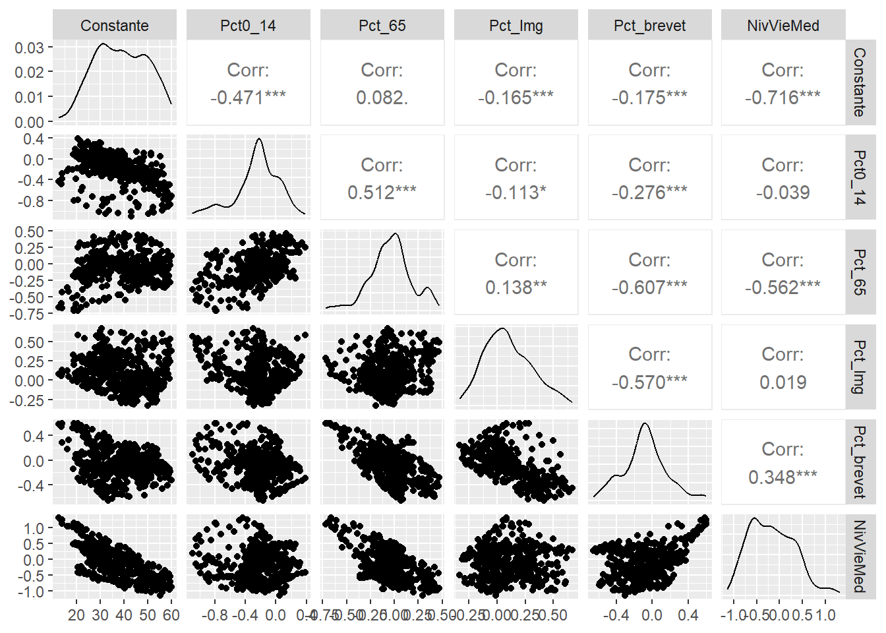
4.5 Quiz de révision
Un modèle de régression géographiquement pondérée produit autant de régressions que d’entités spatiales dans le jeu de données à l’étude.
Relisez le deuxième encadré à la section 4.1.2.
Quelles sont les deux principales fonctions Kernel pour définir la pondération W(i) dans un modèle GWR?
Relisez au besoin la section 4.1.2.
Quelles sont les deux méthodes pour optimiser la zone d’influence optimale avec la fonction gwr.sel?
Relisez au besoin la section 4.2.1.
Quelles fonctions du package spgwr permettent de comparer les modèles MCO (global)?
Relisez le deuxième encadré à la section 4.2.1.3.
Quelle fonction du package spgwr permet de vérifier si les coefficients de régression varient significativement dans l’espace?
Relisez le deuxième encadré à la section 4.2.1.3.
4.6 Exercices de révision
Exercice 1. Réalisation d’un GWR classique
library(sf)
library(spgwr)
load("data/Lyon.Rdata")
# Ajout des coordonnées x et y
xy <- à compléter
LyonIris$X <- à compléter
LyonIris$Y <- à compléter
# Optimisation du nombre de voisins avec le CV
formule <- "PM25 ~ Pct0_14+Pct_65+Pct_Img+Pct_brevet+NivVieMed"
bwCV_voisins <- gwr.sel(à compléter)
# Réalisation de la GWR
modele_gwr <- gwr(à compléter)
# Affichage des résultats
modele_gwrCorrection à la section 8.4.1.
Exercice 2. Comparaison des modèles MCO et GWR
library(sf)
library(spgwr)
# Modèle MCO
modele_global <- à compléter
# Comparaison des R2
r2_global <- à compléter
rss <- à compléter
tss <- à compléter
r2_gwrquasiglobal <- à compléter
cat("R2 global (LM) = ", round(r2_global, 3),
"\nR2 quasi-global (GWR) : ", round(r2_gwrquasiglobal, 3))
# Comparaison des R2
à compléter
# Les coefficients du modèle GWR varient-ils significativement dans l'espace?
à compléterCorrection à la section 8.4.2.
Exercice 3. Cartographie des R2 et des valeurs de t
library(tmap)
# Récupération du R carré locaux et valeurs de t locales
à compléter
## Cartographie des R2 locaux
à compléter
# Cartographie des valeurs de t locales
## Paramètres pour la légende
legende_parametres <- list(text.separator = "à",
text.less.than = "Moins de",
text.or.more = "et plus",
decimal.mark = ",",
big.mark = " ")
## Cartographie
à compléterCorrection à la section 8.4.3.